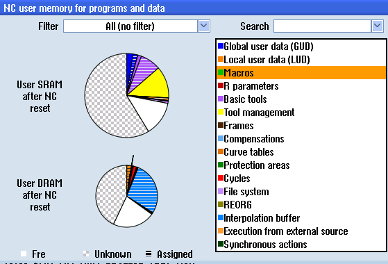
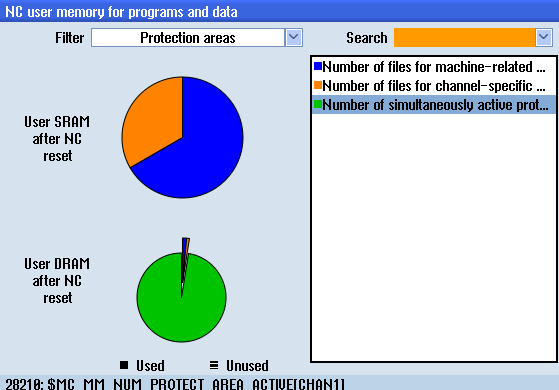

You can view the static and dynamic memory allocation for each user memory data item.
Procedure
 | 1. | The "NC User Memory Data for Programs and Data" window opens. |
| | 2. | Position the cursor on the user memory data item for which you want to display the detailed specifications for the memory allocation. |
| | 3. | Press the "Display" softkey. |
| | | Depending on the filter selection, all user memory data or a filtered selection of memory data is displayed. |
| | 4. | Press the "List with details" softkey. A list the work memory (SRAM and DRAM) for the currently selected memory data and for the complete system is displayed in the lower half of the window. |
| | 5. | Press the "Display symbol" softkey to display the saved data as symbolic name. |
| | | - OR - |
| | | Press the "Display MD text" softkey to display the saved data with the machine data and identifier.
|
| | 6. | In the "Filter" selection list, select the entry "All (no filter)" and press the "Overview" softkey. |
| | |  Overview of all data saved by the user – assignment of the global user data (GUD) You obtain an overview of all of the assigned saved data for the dynamic and static memories (DRAM and SRAM) in the form of a list. The percentage breakdown of user data in dynamic and static memories is displayed in two pie diagrams. The user data selected in the list are highlighted. The allocated percentages are identified using the appropriate shading. Free memory space is also displayed. |
| | | - OR - |
| | | In the "Filter" selection list, select the "Protection areas" entry. |
| | |  Overview of the protected memory data used You obtain an overview of the distribution of used and unused protected memory data on SRAM and DRAM. The selected memory data are highlighted. |
| | | |